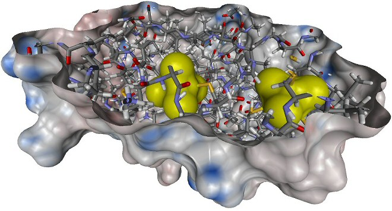

GeometricControl
The GeometricControl enables the user to create and manage Representations.
A Representation is a set of geometric objects, which can be visualised in the
Scene.

The list view shows the name of the model, the name of the molecular entities, for which the
Representation was created, the coloring method. The numbers at the right are the number
of molecular entities, which were used to create the Representation (here one System) and the
number of geometric objects. All at the left side, there is a checkbox to switch the Representation on and off.
The GeometricControl has its own context menu:

Coloring of surfaces
To color a surface, it has to be selected and the context menu entry "Color Surface" must be clicked. Then a new dialog appears.
BALLView provides two possibilities to color surfaces:
Coloring by grids
Informations on how to create and manage data grids can be found here.

At the top of the dialog, the user can select the grid, which he wants to use for coloring.
At every point of the surface, the value in the three-dimensional data grid is interpolated to a color,
which is then used to color the surface.
The colors, can be freely selected. If they are clicked, a dialog for color selection appears.
The min, mid and max colors are the colors between which is interpolated. They
correspond to the values, between which is interpolated.
The min min and max max colors are used for points in the data grid, which are outside
of this range.
If the autoscale button is pressed, the min, mid and max values are taken from the grid,
but the user can also change the values freely. The number of levels corresonds to the number of
colors, which are used for interpolation.
If the user wants to have a transparent surface, the must select "alpha-blending" at the lower left corner.
Then he can change the alpha values (opacity) for any color.
An example for the settings above:

Coloring by custom color

This part of the dialog enables the user to color a surface with only one color.
The color can be freely selected, either by clicking on it and using a color selection dialog
or by using the color value sliders to the left.
The surface can also be made transparent by setting the alpha value.
Here an example with an alpha value of 80 and an underlying stick model:

Usage of cliping planes
Cliping planes are very useful for improving the visibility of otherwise hidden parts of molecules.
They cut of any graphical representation. Unfortunately it is not possible to use them with only one
Representation and let any other be unaffected. An example for their usage:

A new clipping plane is created by clicking the menu entry "Display->New Clipping Plane".
To position the clipping plane, it is best to switch it off first. When this is done, the clipping plane
becomes visible as a blue plane, which can then be moved by clicking the menu entry "Move" in
the context menu of the GeometricControl. The clipping plane can be switched on and off at any time.